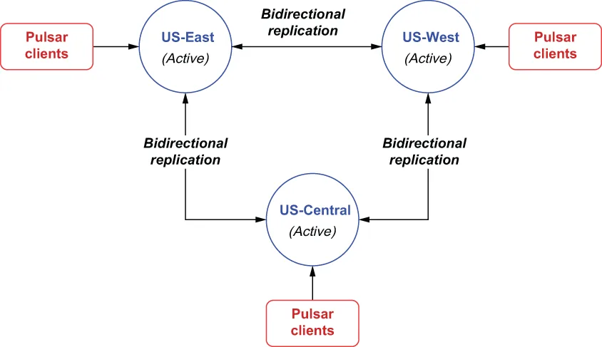

Asynchronous geo-replication is controlled on a per-tenant basis in Pulsar. This means geo-replication can only be enabled between clusters when a tenant has been created that allows access to all of the clusters involved. To configure multi-active geo-replication, you need to specify which clusters a tenant has access to via the pulsar-admin CLI, as shown in the following listing, which displays the command to create a new tenant and grant it permission to access the US-East and US-West clusters only.
在 Pulsar 中，异步异地复制是按租户来控制的。这意味着：只有当已经创建了一个允许访问所有相关集群的租户时，异地复制才能在各个集群之间被启用。要配置多活异地复制（multi-active geo-replication），你需要通过 pulsar-admin CLI 指定一个租户可以访问哪些集群，如下面这份清单所示——它展示了创建一个新租户、并只授予它访问 US-East 和 US-West 两个集群权限的命令。
Listing B.7 Granting a tenant access to clusters
$ /pulsar/bin/pulsar-admin tenants create customers \ ❶
--allowed-clusters us-west,us-east \ ❷
--admin-roles test-admin-role
❶ Create a new tenant named customers.
❶ 创建一个名为 customers 的新租户。
❷ Grant the tenant permission to access these two clusters only.
❷ 只授予该租户访问这两个集群的权限。
Now that the tenant has been created, we need to configure the geo-replication at the namespace level. Therefore, we will first need to create the namespace using the pulsar-admin CLI tool and then assign the namespace to a cluster—or multiple clusters—using the set-clusters command, as shown in the following listing.
既然租户已经创建好了，我们就需要在命名空间级别上配置异地复制。因此，我们首先要用 pulsar-admin CLI 工具创建这个命名空间，然后用 set-clusters 命令把这个命名空间指派给一个集群——或者多个集群——如下面这份清单所示。
Listing B.8 Assigning a namespace to a cluster
$ /pulsar/bin/pulsar-admin namespaces create customers/orders
$ /pulsar/bin/pulsar-admin namespaces set-clusters customers/orders \
--clusters us-west,us-east,us-central
By default, once replication is configured between two or more clusters, as shown in listing B.8, all of the messages published to topics inside the namespace in one cluster are asynchronously replicated to all the other clusters in the list. Therefore, the default behavior is effectively full-mesh replication of all the topics in the namespace with messages getting published in multiple directions, as shown in figure B.4. When you only have two clusters, the default behavior can be thought of as an active-active cluster configuration where the data is available on both clusters to serve clients, and in the event of a single cluster failure, all of the clients can be redirected to the remaining active cluster without interruption.
默认情况下，一旦如清单 B.8 所示在两个或更多集群之间配置了复制，那么在某一个集群中发布到该命名空间内主题的全部消息，都会被异步地复制到列表中的所有其他集群。因此，默认行为实际上就是对该命名空间内所有主题做全网状复制——消息会被发往多个方向，如图 B.4 所示。当你只有两个集群时，这种默认行为可以被理解为一种双活集群配置：数据在两个集群上都可用，以便服务客户端；而万一其中某个集群发生故障，全部客户端都可以被重定向到剩下那个仍然活跃的集群，且不产生中断。

Figure B.4 The default behavior is full-mesh geo-replication between all clusters. Messages published to a topic inside a replicated namespace in the US-East cluster will be forwarded to both the US-West and US-Central clusters.
图 B.4 默认行为是在所有集群之间做全网状异地复制。在 US-East 集群中发布到某个被复制命名空间内主题的消息，将被转发到 US-West 和 US-Central 两个集群。
Besides full-mesh (active-active) geo-replication, there are a few other replication patterns you can use. Another common one for disaster recovery is the active-standby replication pattern.
除了全网状（双活）异地复制之外，还有另外几种你可以使用的复制模式。其中另一种常用于灾难恢复的是主备复制模式（active-standby replication pattern）。